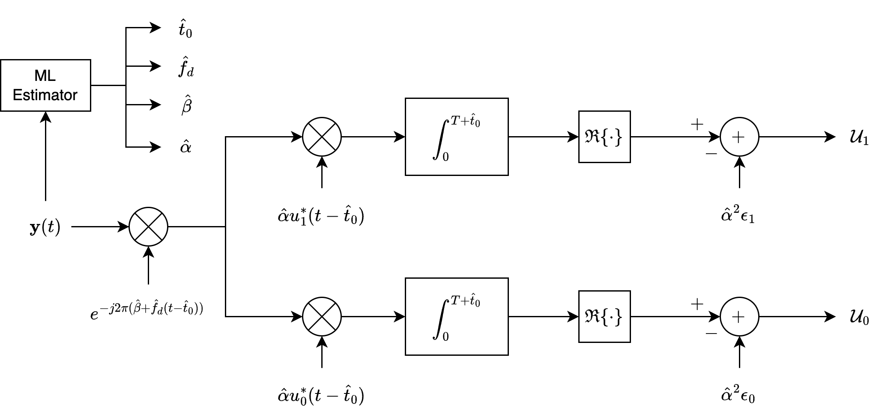

Composite Hypothesis Testing#
We consider a composite hypothesis testing problem, where each hypothesis, \( H_0 \) or \( H_1 \), has a set of associated random parameters, represented by vectors \( \vec{\theta}_0 \) and \( \vec{\theta}_1 \), respectively.
Specifically, let \( \vec{\theta}_0 = \{ \theta_{01}, \ldots, \theta_{0m} \} \) represent a vector of random parameters associated with hypothesis \( H_0 \) and \( \vec{\theta}_1 = \{ \theta_{11}, \ldots, \theta_{1n} \} \) be a vector of random parameters associated with \( H_1 \).
Parameter Vectors \( \vec{\theta}_0 \) and \( \vec{\theta}_1 \)
For each hypothesis, a vector of parameters is associated with the signal model. These parameters can include elements like attenuation, time of arrival, frequency offset, etc.
For example, \( \theta_{01} \) might be the attenuation factor for the signal \( s_0(t) \) under hypothesis \( H_0 \), while \( \theta_{1n} \) could be the time of arrival for the signal \( s_1(t) \) under hypothesis \( H_1 \).
The parameter vectors for \( H_0 \) and \( H_1 \) do not necessarily have the same number of elements, which means \( m \neq n \). This flexibility allows each hypothesis to have a different structure and number of parameters.
Measurement Model
The measurement vector \( \vec{y} = [y_1, y_2, \ldots, y_k] \) represents a set of \( k \) complex observations, which depend on the hypothesis (i.e., whether \( H_0 \) or \( H_1 \) holds) and the associated random parameters \( \vec{\theta}_0 \) or \( \vec{\theta}_1 \).
Each measurement \( y_j \) under hypothesis \( H_i \) is modeled as:
where \( s_{ij} \) represents the \( j \)-th sample of the signal under \( H_i \) and \( z_j \) is the noise, typically modeled as a complex Gaussian random variable.
Note again that the set of measurements \( \vec{y} \) is dependent upon the hypothesis and the values of the random parameters.
Conditional Probabilities
The probability distributions \( p_0(\vec{y} | \vec{\theta}_0) \) and \( p_1(\vec{y} | \vec{\theta}_1) \) describe the likelihood of observing the measurement vector \( \vec{y} \) given the parameter vectors \( \vec{\theta}_0 \) or \( \vec{\theta}_1 \) under hypotheses \( H_0 \) and \( H_1 \), respectively.
and
These likelihood functions are essential in determining which hypothesis best explains the observed data.
Objective: Hypothesis Decision#
The goal is to decide between hypotheses \( H_0 \) and \( H_1 \) based on the observed measurements \( \vec{y} \).
The approach depends on the availability of information about the parameter vectors \( \vec{\theta}_0 \) and \( \vec{\theta}_1 \):
Condition 1: Known A Priori Probability Density Functions#
If we know the a priori probability density functions of \( \vec{\theta}_0 \) and \( \vec{\theta}_1 \), we can use Bayesian methods to compute posterior probabilities for each hypothesis given \( \vec{y} \).
This approach allows integrating the parameter uncertainty directly, leading to an optimal decision rule in a Bayesian sense.
Condition 2: Unknown Density Functions#
If one or both density functions are unknown, we face a more complex problem.
In this case, we might resort to robust or generalized likelihood ratio approaches, which make fewer assumptions about the exact form of the parameter distributions.
For example, if the parameters are completely unknown:
maximum likelihood estimation (MLE) could be used to estimate the parameters from the observed data
and then these estimates could be plugged into the likelihood functions for hypothesis testing.
Known Density Functions#
We review the concept of Bayes risk in the context of composite hypothesis testing, where the density functions of the parameter vectors \( \vec{\theta}_0 \) and \( \vec{\theta}_1 \) are known.
Bayes Risk#
The Bayes risk provides a measure of the expected cost of a decision-making process that considers both hypotheses and the uncertainties in their associated parameters.
Decision Regions \( R_0 \) and \( R_1 \)
\( R_0 \) and \( R_1 \) represent the regions in the measurement space where the decision rules favor hypotheses \( H_0 \) and \( H_1 \), respectively.
For instance, if \( \vec{y} \in R_0 \), we decide on \( H_0 \), and if \( \vec{y} \in R_1 \), we decide on \( H_1 \).
Costs Associated with Decisions
The cost terms \( C_{00} \), \( C_{10} \), \( C_{01} \), and \( C_{11} \) represent the costs of making a correct or incorrect decision under each hypothesis.
These costs can vary with the values of \( \vec{\theta}_0 \) and \( \vec{\theta}_1 \), reflecting the influence of the parameter uncertainties.
\( C_{00}(\vec{\theta}_0) \): Cost of deciding \( H_0 \) when \( H_0 \) is true.
\( C_{10}(\vec{\theta}_0) \): Cost of deciding \( H_1 \) when \( H_0 \) is true (Type I error).
\( C_{01}(\vec{\theta}_1) \): Cost of deciding \( H_0 \) when \( H_1 \) is true (Type II error).
\( C_{11}(\vec{\theta}_1) \): Cost of deciding \( H_1 \) when \( H_1 \) is true.
Bayes Risk Expression
The Bayes risk \( r \) is the expected cost across all possible outcomes.
It’s computed by integrating over the parameter vectors \( \vec{\theta}_0 \) and \( \vec{\theta}_1 \), as well as over all possible measurements \( \vec{y} \), within the respective decision regions \( R_0 \) and \( R_1 \).
The Bayes risk is expressed as:
where
\( p(\vec{\theta}_0) \) and \( p(\vec{\theta}_1) \) are the \( m \)-fold and \( n \)-fold density functions of \( \vec{\theta}_0 \) and \( \vec{\theta}_1 \), respectively
\( \pi_i \) is again \( P(H_i) \) for \( i = 0, 1 \).
For simplicity in notation, the conditional PDFs are written in the last equation as
The Bayes risk considers the conditional probabilities \( p_0(\vec{y} | \vec{\theta}_0) \) and \( p_1(\vec{y} | \vec{\theta}_1) \) of observing \( \vec{y} \) given the parameters under each hypothesis, weighted by the prior probabilities \( \pi_0 \) and \( \pi_1 \) of the hypotheses and by the density functions of the parameter vectors.
Simplified Bayes Risk Expression#
Next, we aim to derive the simplified form of the Bayes risk.
We start by separating the terms by combining the integrals over \( R_0 \) and \( R_1 \) for each hypothesis.
Terms for \( H_0 \):
Terms for \( H_1 \):
Complements of Integrals
Notice that for any conditional PDF \( p_i(\vec{y} | \vec{\theta}_i) \):
Apply this identity to the terms in \( R_1 \) for both \( H_0 \) and \( H_1 \), we have:
\( H_0 \) Terms in \( R_1 \):
\( H_1 \) Terms in \( R_1 \):
Finally, we rewrite the Bayes risk using these substitutions:
Interpretation of The Simplifed Bayes Expression
For the first two terms, the terms
represent the prior costs associated with each hypothesis.
These terms depend only on the parameter distributions \( p(\vec{\theta}_0) \) and \( p(\vec{\theta}_1) \) and the associated costs for making decisions under each hypothesis.
For the integral over \( R_0 \), the remaining terms within the integral over \( R_0 \) capture the expected cost difference between making correct and incorrect decisions within the decision region for \( H_0 \).
The term
represents the contribution to the Bayes risk when hypothesis \( H_1 \) is true, but the decision region \( R_0 \) favors \( H_0 \).
This term measures the penalty for a Type II error (incorrectly deciding \( H_0 \) when \( H_1 \) is true) and adjusts it by the probability and cost difference for this error.
Similarly, the term
represents the penalty when \( H_0 \) is true, but the receiver decides on \( H_1 \), which would be a Type I error.
Likelihood Ratio#
Next, we introduce a likelihood ratio test to decide between hypotheses \( H_0 \) and \( H_1 \) by minimizing the Bayes risk.
Key Assumption: Higher Cost for Errors than for Correct Decisions
It’s assumed that the cost of an incorrect decision (mistake) is higher than the cost of a correct decision:
These inequalities imply that the penalty for choosing the wrong hypothesis outweighs any benefit of a correct choice.
Minimizing Bayes Risk#
Since the first two terms in the simplified Bayes risk expression do not depend on the decision region \( R_0 \), we can minimize \( r \) by focusing only on the terms within \( R_0 \).
We choose decision region \( D_0 \) (or \( R_0 \)) if:
Conversely, we choose decision region \( D_1 \) (or \( R_1 \)) if:
Likelihood Ratio and Decision Rule#
If the costs are independent of \( \vec{\theta}_0 \) and \( \vec{\theta}_1 \), we can simplify further.
In this case, the decision rule reduces to comparing a likelihood ratio \( L(\vec{y}) \) against a threshold:
Likelihood Ratio \( L(\vec{y}) \)
Define the likelihood ratio \( L(\vec{y}) \) as:
This ratio represents the “averaged” or marginal likelihoods of observing \( \vec{y} \) under each hypothesis after accounting for the parameter distributions \( p(\vec{\theta}_0) \) and \( p(\vec{\theta}_1) \).
Threshold Condition:
The threshold is:
Thus, ff the costs are independent of \( \vec{\theta}_0 \) and \( \vec{\theta}_1 \), then \( D_1 \) is chosen if
In summary, by averaging over the conditional densities \( p_1(\vec{y} | \vec{\theta}_1) \) and \( p_0(\vec{y} | \vec{\theta}_0) \) with respect to the known parameter distributions, we determine an optimal decision rule based on the Bayes risk minimization.
Unknown Density Functions#
When the probability density functions \( p(\vec{\theta}_0) \) and \( p(\vec{\theta}_1) \) are unknown, we cannot use the results from the previous section.
There is no general approach that is always successful in this case, but a number of useful techniques have been developed.
Maximum-Likelihood Technique#
One of the most common techniques is based upon the maximum-likelihood approach introduced in Chapter 3 (Estimation).
This can be written as
although some authors define it as
(Note that the two LLR above are not necessarily equivalent.)
or, more succinctly, as
where \( \hat{\vec{\theta}}_i \), \( i = 0, 1 \), is the ML estimate of \( \vec{\theta}_i \), \( i = 0, 1 \).
This approach is also referred to as the generalized likelihood-ratio test (GLRT), although this term is not universally used by all authors to mean the same thing.
That is, we find the ML estimates of the vectors \( \vec{\theta}_0 \) and \( \vec{\theta}_1 \); then we use these values in the likelihood function as if the estimated vectors were known.
This technique is generally most useful when \( p_0(\vec{y}) \) corresponds to the hypothesis of noise only.
Although the technique is straightforward and somewhat intuitively pleasing, it should be used with care, because we cannot ensure optimal performance.
Unknown Density Functions#
When the density functions \( p(\vec{\theta}_0) \) and \( p(\vec{\theta}_1) \) are unknown, direct application of Bayesian methods becomes impossible.
Instead, we can apply Maximum-Likelihood (ML) techniques, which can estimate the parameters \( \vec{\theta}_0 \) and \( \vec{\theta}_1 \) directly from the observed data \( \vec{y} \).
This approach is often referred to as the Generalized Likelihood-Ratio Test (GLRT), though this terminology can vary among authors.
Maximum-Likelihood Approach#
The goal of the ML technique is to evaluate the likelihood ratio by finding the parameter values that maximize the likelihoods under each hypothesis.
General Maximization of the Likelihood Ratio
One approach is to directly maximize the likelihood ratio over both parameter sets \( \vec{\theta}_0 \) and \( \vec{\theta}_1 \):
It means that we find the combination of parameter values \( \vec{\theta}_1 \) and \( \vec{\theta}_0 \) that maximizes the ratio of likelihoods for each hypothesis.
This formulation is effective when we want the optimal ratio over all possible parameter values, though it’s computationally intensive and may not always yield unique results.
Separately Maximized Likelihood Ratio
Alternatively, the likelihood ratio can be calculated by maximizing each term independently:
It means that we independently find the parameter values \( \vec{\theta}_1 \) and \( \vec{\theta}_0 \) that maximize the likelihoods under \( H_1 \) and \( H_0 \), respectively.
This form is computationally simpler and often used in practical applications but may yield different results from the previous formulation.
Simplified Form with ML Estimates
A compact representation uses the ML estimates \( \hat{\vec{\theta}}_1 \) and \( \hat{\vec{\theta}}_0 \) directly:
where \( \hat{\vec{\theta}}_i \) is the ML estimate for \( \vec{\theta}_i \) under hypothesis \( H_i \) (for \( i = 0, 1 \)).
This approach treats the ML estimates as if they were the true parameter values, substituting them into the likelihood functions.
Advantages of GLRT#
The GLRT using the ML estimates assumes that the unknown parameters can be reasonably well approximated by their ML estimates.
By substituting these estimates into the likelihood functions, we effectively reduce the problem to a simpler likelihood ratio test with fixed parameters.
This technique is particularly useful when \( p_0(\vec{y}) \) represents a noise-only hypothesis, meaning that under \( H_0 \), there’s only noise and no signal.
In such cases, maximizing the likelihood under \( H_1 \) often identifies the presence of a signal, as the noise-only hypothesis yields relatively low likelihood values for structured signals.
Caution with GLRT#
While the GLRT is intuitive and straightforward, it is not guaranteed to be optimal. This is because:
Parameter Estimation Errors: Using ML estimates does not account for the uncertainty in the parameter estimates themselves, which can lead to suboptimal decisions.
Potential Bias: The GLRT may favor one hypothesis if the ML estimates systematically differ from the true values due to noise or other effects.
Despite these limitations, the GLRT is widely used in practice for situations with unknown parameters, offering a pragmatic solution when full Bayesian methods are infeasible.
GLRT Receiver Structure#

The GLRT approach is often used in practice.
Figure 6.2 shows a general GLRT receiver structure where all four parameters of amplitude, phase, frequency, and time of arrival are estimated and then applied to the detection circuit.
Notice the similarity between the optimal continuous receiver structure of Figure 6.1 and the GLRT receiver structure of Figure 6.2.
Depending on the specific application, all four parameters need not be estimated in every situation such as shown in Figure 6.2, but the full generality of the structure is available.
With regard to finding optimal or good ML estimates of each of the parameters (we will address in the next chapter).
Least Favorable Density-Function Technique#
Another technique that is useful in some situations is to assume least favorable density functions \( p(\vec{\theta}_0) \) and \( p(\vec{\theta}_1) \).
The following example illustrates this approach.
Example 6.1#
Assume that we are evaluating a detection problem where, under \( H_0 \), the received signal is noise of a known distribution.
In this example, the maximum-likelihood ratio is
We choose \( D_1 \) if \( L(\vec{y}) \) is greater than or equal to some threshold \( \tau \).
The average probability of choosing \( D_1 \) when \( H_1 \) is correct is
The least favorable density function is that \( p(\vec{\theta}_1) \) which minimizes this average probability.
In general, it is often difficult to determine this density function; nonetheless, in many practical cases, it is clear from the problem which density function should be used.
Specific cases are given in following sections.
Least Favorable Density-Function Technique#
The Least Favorable Density-Function (LFDF) Technique is another approach for handling detection problems with unknown parameter densities, particularly when we lack prior knowledge about the true distributions of parameters \( \vec{\theta}_0 \) and \( \vec{\theta}_1 \).
This approach involves selecting density functions that minimize the probability of correct detection under \( H_1 \), thus creating a conservative or “worst-case” scenario.
Specifially, the idea of the LFDF technique is to assume density functions \( p(\vec{\theta}_0) \) and \( p(\vec{\theta}_1) \) that make the detection task hardest for the detector.
By using these least favorable densities, we can design a detection strategy that performs adequately even in the worst-case distribution scenario.
Example: Application of LFDF in Detection#
This example, based on Example 6.1 in textbook [B2], considers a detection problem where, under \( H_0 \), the received signal consists only of noise with a known distribution.
This setup allows us to focus on how the LFDF technique applies to the alternative hypothesis \( H_1 \).
Likelihood Ratio
The likelihood ratio \( L(\vec{y}) \) for deciding between \( H_0 \) (noise-only hypothesis) and \( H_1 \) (signal-present hypothesis) is:
Here, \( \int_{\vec{\theta}_1} p_1(\vec{y} | \vec{\theta}_1) p(\vec{\theta}_1) \, d\vec{\theta}_1 \) represents the averaged likelihood under \( H_1 \), where \( p(\vec{\theta}_1) \) is the distribution of the parameter vector \( \vec{\theta}_1 \).
Decision Rule
We choose hypothesis \( D_1 \) (or \( H_1 \)) if \( L(\vec{y}) \) is greater than or equal to some threshold \( \tau \).
This threshold can be set based on desired false-alarm or detection probabilities.
Average Probability of Choosing \( D_1 \) Under \( H_1 \)
The probability of correctly choosing \( D_1 \) when \( H_1 \) is true, averaged over the distribution \( p(\vec{\theta}_1) \), is given by:
This expression integrates over the decision region \( R_1 \) and all possible values of \( \vec{\theta}_1 \), weighted by the density function \( p(\vec{\theta}_1) \).
Selecting the Least Favorable Density
The LFDF \( p(\vec{\theta}_1) \) is chosen to minimize \( E \{ P(D_1 | H_1) \} \). In other words, we seek a density \( p(\vec{\theta}_1) \) that reduces the probability of correct detection under \( H_1 \) as much as possible.
Although finding the least favorable density function analytically can be challenging, in many practical cases, the structure of the problem suggests an appropriate density function.
For example, a uniform or broad distribution for \( p(\vec{\theta}_1) \) might be least favorable if it maximizes uncertainty about the parameter values.
Discussion.
In the following sections, when we assume a uniform distribution for unknown phase and/or a Rician distribution for unknown amplitude, these assumptions reflect typical statistical models for unknown parameters in signal processing, rather than the LFDF technique specifically.
Conditional Likelihood-Ratio Technique#
A third technique that is occasionally useful in cases where the density functions are unknown can be understood by examining the “conditional” likelihood ratio
to produce a decision.
In general, the decision test will be a function of both \( \vec{\theta}_0 \) and \( \vec{\theta}_1 \).
If, however, it is not a function of either \( \vec{\theta}_0 \) or \( \vec{\theta}_1 \), then it is the same test for all values of \( \vec{\theta}_0 \) and \( \vec{\theta}_1 \) and is independent of the specific density functions.
This is called a uniformly most powerful test (UMPT).
Conditional Likelihood Ratio Technique#
The Conditional Likelihood-Ratio Technique is another approach for hypothesis testing when the probability density functions \( p(\vec{\theta}_0) \) and \( p(\vec{\theta}_1) \) are unknown.
It involves using a conditional likelihood ratio, which compares the likelihoods of the observed data \( \vec{y} \) under each hypothesis, given specific values of the parameter vectors \( \vec{\theta}_0 \) and \( \vec{\theta}_1 \).
The conditional likelihood ratio is defined as:
Decision Rule
The decision rule based on this conditional likelihood ratio involves comparing \( L(y | \vec{\theta}_0, \vec{\theta}_1) \) to a threshold.
This test will generally depend on the values of \( \vec{\theta}_0 \) and \( \vec{\theta}_1 \), meaning the decision criterion changes depending on the specific values of the parameters.
Uniformly Most Powerful Test (UMPT)
A UMPT occurs if the decision test derived from \( L(y | \vec{\theta}_0, \vec{\theta}_1) \) does not depend on the specific values of \( \vec{\theta}_0 \) or \( \vec{\theta}_1 \).
This would imply that:
The test is equally valid and optimal across all possible values of \( \vec{\theta}_0 \) and \( \vec{\theta}_1 \).
The test is independent of the specific density functions \( p(\vec{\theta}_0) \) and \( p(\vec{\theta}_1) \), meaning it remains valid even when these densities are unknown.
The UMPT is valuable because it provides a consistent, optimal decision rule that maximizes detection performance regardless of the unknown parameter values.